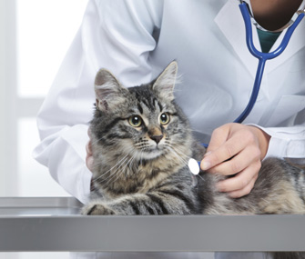
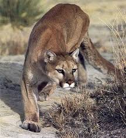
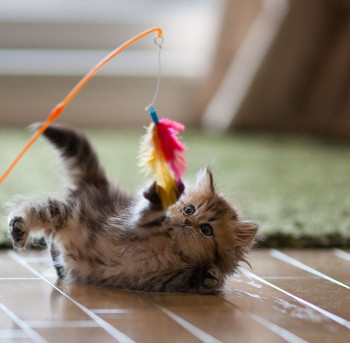

Cat Health
Vet Visits
So, you've decided to adopt a feline friend? Great!! One of the very first things you should do is take that kitty to the vet. A veteranian will tell you all of the immunizations your new friend needs, why they need them, and how often. It is also extremely important to spay/neuter your pet. There is an overpopulation problem among cats, which I would be totally fine with as long as all of the kitties had loving homes, but they don't, so yes, it's a problem. Your vet will tell you at what age the cat should be to be spayed/neutered. It is also very beneficial to microchip your new pet. It is inexpensive, not painful, and may help you find your pet if he/she gets lost! Cats are curious and fast, so it's very possible that your kitty may dart out your door at some point. Ask the vet any questions you may have and schedule for your next visit. Keep your kitty's health a priority!
The Cat Diet: a vegans worst nightmare, all meat and nothing else and why commercial brands are garbage
Cats are true carnivores, while dogs are able to eat a diet without meat, cats cannot. Their diet should consist mainly of animal protein – however this may be expensive. Next best thing is wet (canned) cat food with limited ingredients (no fillers like corn) and no by-products. Wet cat food is best, because cats do not have a high thirst drive. Commercial brands are cheap because they are the McDonald’s of cat food, with their main ingredient being animal by-products and the rest being ingredients that no cat ever needs (fillers=cheap). A high-protein diet will not only give the cat everything that it needs to be healthy and happy, but also will keep it fuller, longer. Always keep clean, fresh water around – to get your cat to drink more water use a shallow bowl (cats don’t like when their whiskers touch the edges) and keep it away from their food bowls (their cat instincts tell them not to drink close to their food, because in the wild this water is usually contaminated from their kill).
Playtime: how to play with felines and why it is so important
Their playtime is all about them being a hunter. Did you know cats kill and hunt for fun? As in, it's not always for hunger, but just sheer boredom. Cat toys are great, but household items are cheaper and can work just as well. Up the ante by giving the cat some catnip prior (only some cats respond to this). Playtime not only is important for the cat's health and their need to exercise (especially if it's an indoor cat), but it is also an important bonding experience for you and your cat.